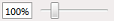

Reports
The Reports component only contains one task: the Reports task. Use the Reports task to manage project-specific reports. Generated reports can be opened, viewed, printed and exported.
1 | Task selector | 2 | Group tree |
3 | Preview area | 4 | Preview status bar |
5 | ABT Site toolbar |
| |
① Task selector
Task | Description |
|---|---|
Reports | Current task |
② Group tree
Shows a tree where you can navigate the report pages per device.
③ Preview area
The Preview area shows the generated report.
④ Preview status bar
The Preview status bar shows the page number (e.g. Page 1 of 3), and a toolbar customizing the report view (e.g. Zoom).
Command | Description |
|---|---|
Fit to width | Adjusts the report view to the available screen width. |
Full page | Shows one whole page of the report. |
Zoom bar  | Use the Zoom bar to set the page size. You can enter a percent value, or use the slider to adjust the report view size. |
⑤ ABT Site toolbar
Command | Description |
|---|---|
Opens the Print dialog box. | |
Refresh | Refreshes the displayed report data. |
Report structure | Opens or closes a group tree where you can navigate the report pages per device. |
Go to previous page | Go to the next page of the report. |
Go to page | You can enter a page number in the field and press Show. |
Go to next page | Go to the previous page of the report. |
Export report | Opens the Export report dialog box where you can browse for a directory, select a file type, and save the report. The following file types are supported:
|